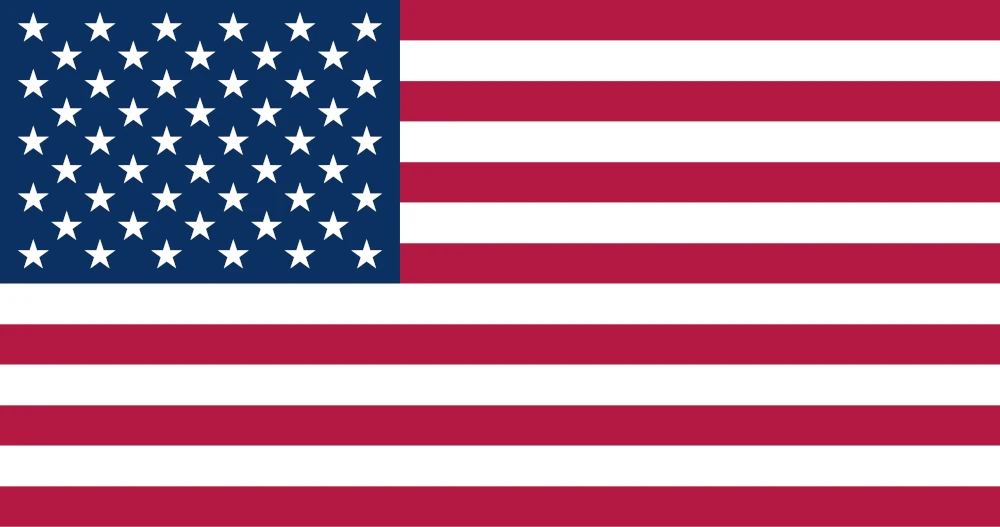

David Poulsen
About me
My name is David Poulsen. I'm from Salt Lake City, Utah. I've been majoring in software development for the last couple years. I enjoy reading, playing guitar, and playing video games. I served my mission in the Washington Everett mission. My goal is to be graduate from BYU-Idaho and become a teacher.

The United States
The United States is a large, diverse nation made up of 50 states, a federal district, and several territories. It operates as a constitutional republic with a government designed around democratic principles and separation of powers. The country has a highly varied population, geography, and economy, making it influential globally in culture, science, and trade.